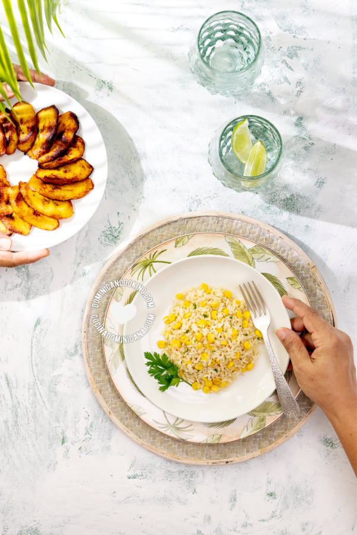
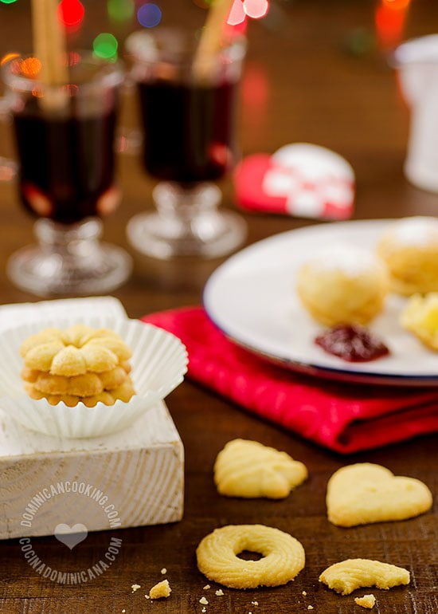

ARROZ CON MAÍZ (LOCRIO O MORO DE MAÍZ)
Bollitos de yuca rellenos de queso
Galletas de mantequillas NAVIDEÑAS
Chocolate espeso especiado

Le damos la bienvenida a mi pagina de comida casera -Recetas faciles
Esta pagina esta dedicada atodas las
personas que le gusta cocinar y dedicar tiempo en la cocina.
Aqui encontraras comida facil de preparar y
rapida a la vez y no menos importante con facilidad tambien
Estas recetas re caracterizan por su
sencillez y por que requieren de pocos ingredientes
Ya no hay excusas para empezar a conicar todo
rapido y faci animate